Signease · Indian Sign Language ecosystem
Signease, a sign-first app that lets Deaf and hearing people talk, learn and work together
UI/UX + ACCESSIBILITY
SOLO PRODUCT DESIGNER
TWO USER ROLES
48 SCREENS
View full case study on Behance
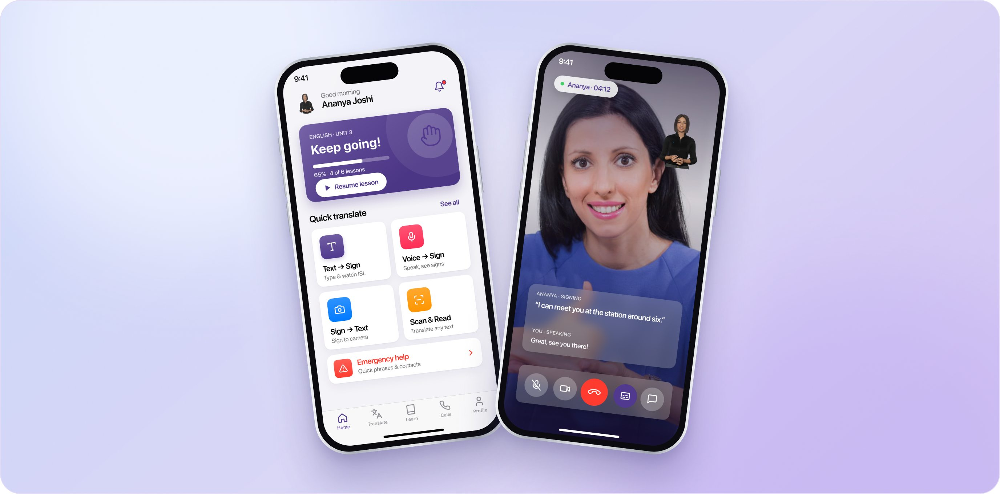
Go back
01
OVERVIEW
02
CONTEXT
03
PROBLEM
04
ITERATIONS
05
FINAL DESIGN
Key screens
Calls both ways
Emergency
06
OUTCOME
01 / 06
OVERVIEW
About Signease
Signease is an accessibility-focused ecosystem for Indian Sign Language. A mobile app translates between text, voice and sign in both directions, with separate learning paths for Deaf and hearing users.
Overview: More than a translation tool
Signease began with a simple question: why should communication become difficult just because two people use different languages?
The project explores an Indian Sign Language-first ecosystem that brings communication and learning into one experience. Instead of treating accessibility as a feature added to an existing product, I designed for Deaf and hearing people as two equally important participants in a conversation.
My role
End-to-end product design, from research and problem framing to information architecture, user flows, UI design and prototyping.
Scope
Field research
Personas
IA and user flows
UI system
48 screens
Prototype
Outcomes
48
Screens, two roles, one design system
4
Personas built from a field visit to a Deaf school
5
Products scoped, with the mobile app designed end to end
02 / 06
CONTEXT
ISL is a first language for millions.
Most tools still assume Text.
Deaf people in India grow up signing, then meet a world built on speech and written language. Teachers, doctors and employers rarely sign, and interpreters are scarce.
My elder sister is Deaf. I wanted a tool that not only assists, but also raises awareness.
35–44%
of reading, language and maths variance explained by sign-language proficiency alone
Hrastinski & Wilbur, 2016
4×
more reading-comprehension questions answered correctly by sign-fluent students: 40% against 10%
Hrastinski & Wilbur, 2016
8th–9th
grade reading level reached by native-signing deaf readers, against a 4th-grade average
From the literature review: a strong first language in sign is what makes reading possible, and the bridge to text has to be taught.
FACT
73.9% of Deaf adults aged 15–59 are marginal workers. Only 26.1% hold regular jobs, and communication is a big reason why.
03 / 06
PROBLEM
What I heard beyond the language barrier
I visited a school for the Deaf in Buldhana, Maharashtra, and spoke with 10 -12 students, their teachers and parents. Their stories kept pointing at the same wall.

WHAT WE HEARD
STUDENT
“We don’t understand language subjects well; they are hard for us.”
TEACHER, DEAF SCHOOL
“I explain, they copy, and I am never sure they understood.”
STUDENT, CLASS 7
“I want to become an engineer, but can a deaf person become one?”
CORE PROBLEM STATEMENT
“How might we help Deaf people communicate and learn in ISL, and help hearing people meet them halfway, so language stops being a barrier?”
Three issues created this problem
Pen and paper
Gestures
No interpreter
COMMUNICATION
Every conversation is a negotiation
Ordering food or explaining symptoms depends on notes and guesswork.
Forms
Websites
Captions
INFORMATION
Text alone is not accessibility
ISL and written grammar differ, so a form or caption is harder to read than it looks.
Teacher can’t sign
No ISL books
EDUCATION
Lessons get lost in translation
Students copy from the board without understanding, and teachers have no ISL-ready material.
04 / 06
Design iterations
From a purple wash
to native iOS
My first version used full solid-purple screens, and the second used glass and gradients. Testing them against real reference apps showed the problems below, so the final version follows iOS conventions.
V1 · BEFORE
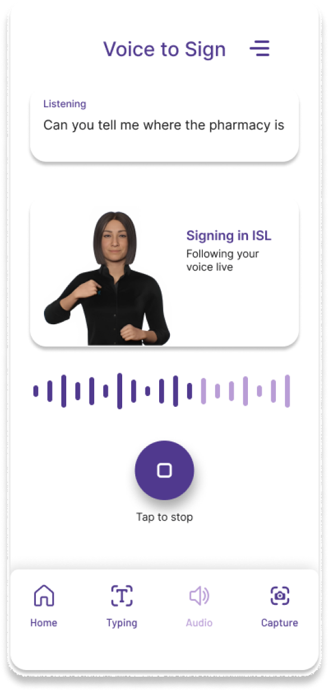
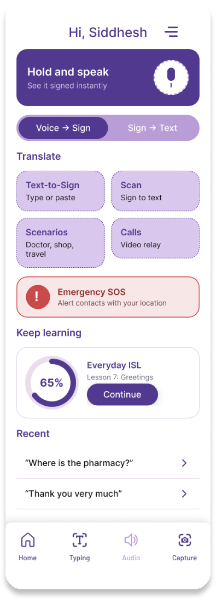
FINAL · NATIVE iOS
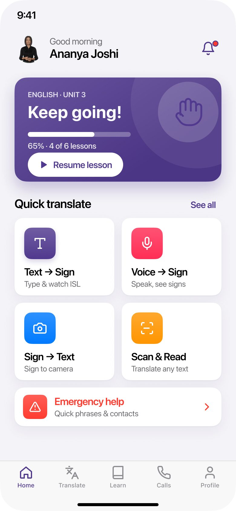
WHAT WAS WRONG
Effects everywhere
Gradients, glow and blur on every card, so nothing looked chosen on purpose.
WHAT WAS WRONG
Accent everywhere
Titles, links, chips and buttons were all purple, so it was hard to tell what was tappable.
WHAT WAS WRONG
Text too small
Body text sat at 10 to 13px, below what iOS uses for reading.
The app follows iOS conventions: SF Pro, solid grouped surfaces and system colours, with Signease purple kept as the one accent for actions.
05 / 06
FINAL DESIGN
Bringing communication
and learning together
Four rules every screen had to pass, each one taken from an insight.
GOAL 01
Sign first, text second
Every answer leads with sign video, with text and captions as support. Written language is a second language for Deaf users.
GOAL 02
One shape for two roles
Deaf and hearing users get the same five tabs with different content, so a family sharing one phone never has to relearn the app.
GOAL 03
Light enough for a low-end phone
Short clips, offline lessons and system fonts keep data and storage low. Every tap target is at least 44pt.
GOAL 04
Help is one tap away
Emergency help and quick translate stay on Home, because today help depends on whoever happens to be nearby.
INFORMATION ARCHITECTURE
48 screens, 12 modules, one five-tab app
Architecture is what exists and where it sits: one app, two roles, the same five-tab bottom navigation holding different content for each. All 48 screens are grouped into 12 modules, shared by both roles unless noted.
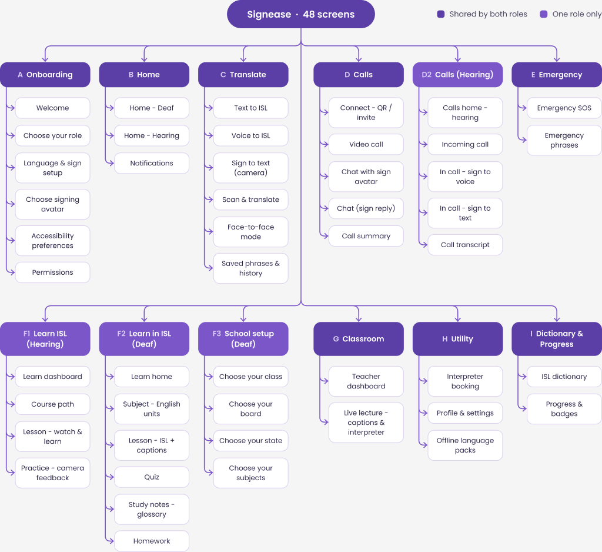
Home · Deaf user
Quick translate and SOS sit on Home.
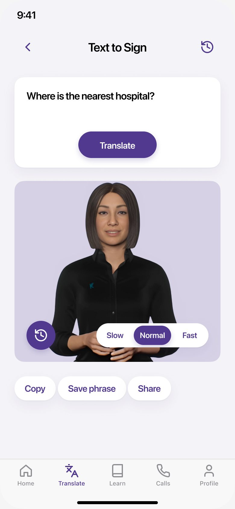
Translate · Text to ISL
Sign video leads, text supports.
Learn
Short lessons with camera feedback.
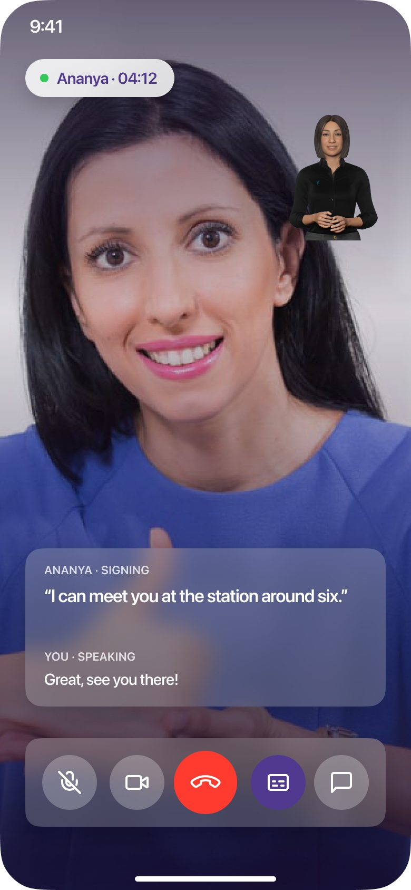
Video call
Signs voiced, speech becomes captions.
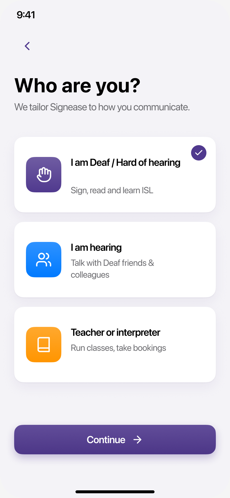
Onboarding · Choose your role
One question up front personalises navigation, vocabulary and learning path.
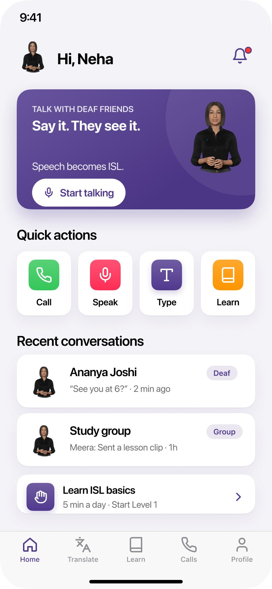
Home · Hearing user
The same five tabs, different content.
CALLS BOTH WAYS
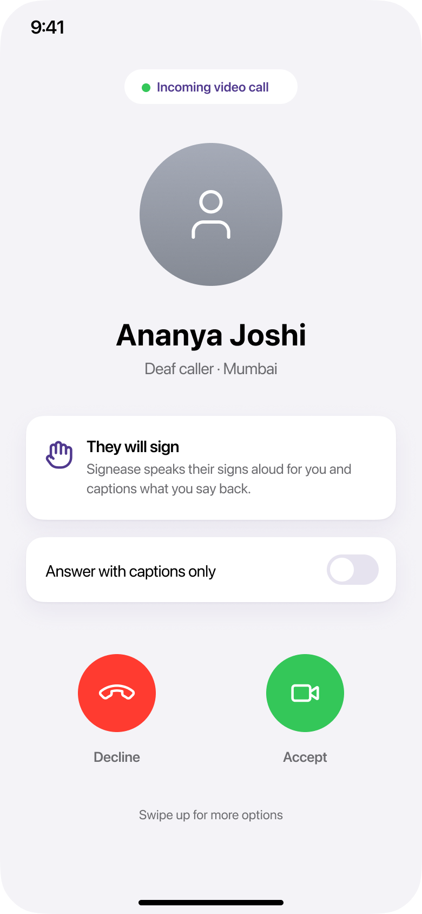
Incoming call
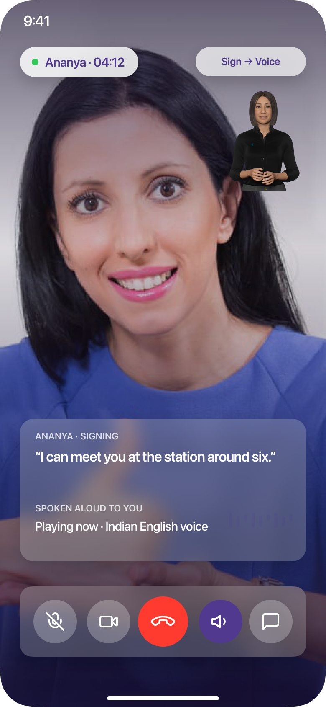
Sign to voice
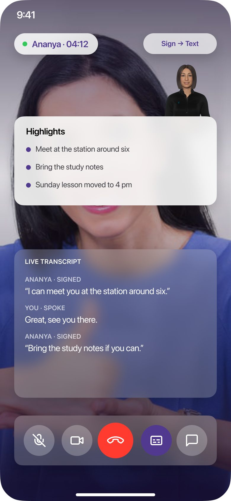
Sign to text
EMERGENCY
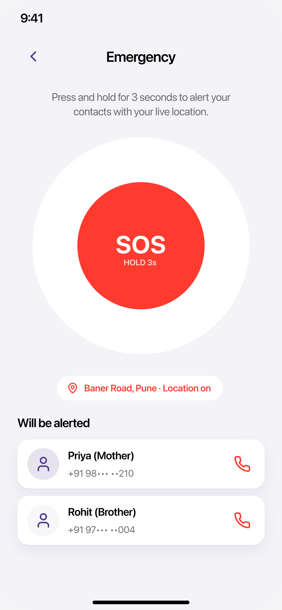
Emergency SOS
SOS with live location, without typing.
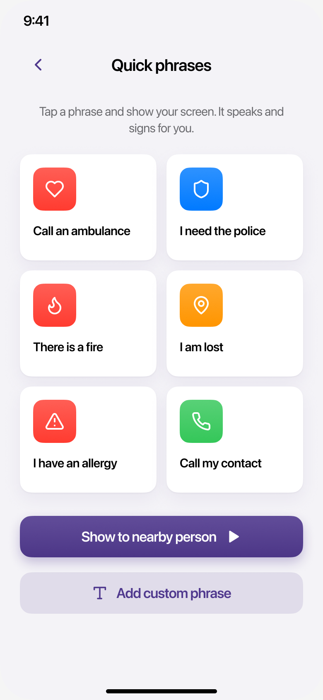
Emergency phrases
Ready phrases to show when nobody nearby signs.
48 screens across onboarding, both homes, translate, learn, calls and emergency help, in one design system.
06 / 06
OUTCOME
What this is,
and what it is not yet
A case study is only honest if it says where it stops. Signease is a concept, and these are its edges.
WHAT THIS IS
— An ISL-first concept for literacy and translation, scoped as five products with one app designed end to end.
— Grounded in conversations with 25–30 Deaf students, teachers, parents and Deaf professionals, and four peer-reviewed papers.
WHAT IT IS NOT YET
— There is no trained ISL recognition model. Sign-to-text behaviour, states and confidence are designed, not built.
— It has not been usability tested yet, so the numbers here describe the design, not its outcomes.
WHAT I WOULD DO NEXT
— Put the Translate flow in front of five Deaf students and time the task rather than ask about it.
— Take the sign vocabulary to ISLRTC for review before any of it is treated as correct.
PROTOTYPE · TEST PLAN NOT RUN YET
A Figma prototype covers the five flows that matter most. It has not been tested with users yet, so the plan says exactly what will be measured: task completion, time on task and errors.
IF I DID THIS AGAIN
I’d put the Translate flow in front of Deaf students before polishing the visuals, because I redesigned the interface twice before anyone had used it.
The goal was never to translate for Deaf people. It was to let them communicate and understand, and be communicated with in their own language.
THAT WAS THE SHORT VERSION
The full case study has the field research, personas, user flows and every iteration behind each decision.
View full case study on Behance
Next project
AI Trade Dashboard
01
A shared board for AI trade ideas